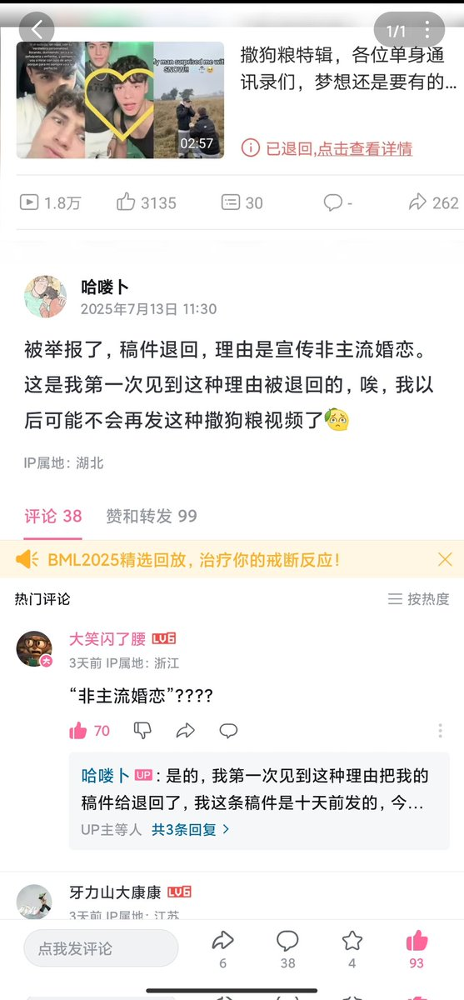
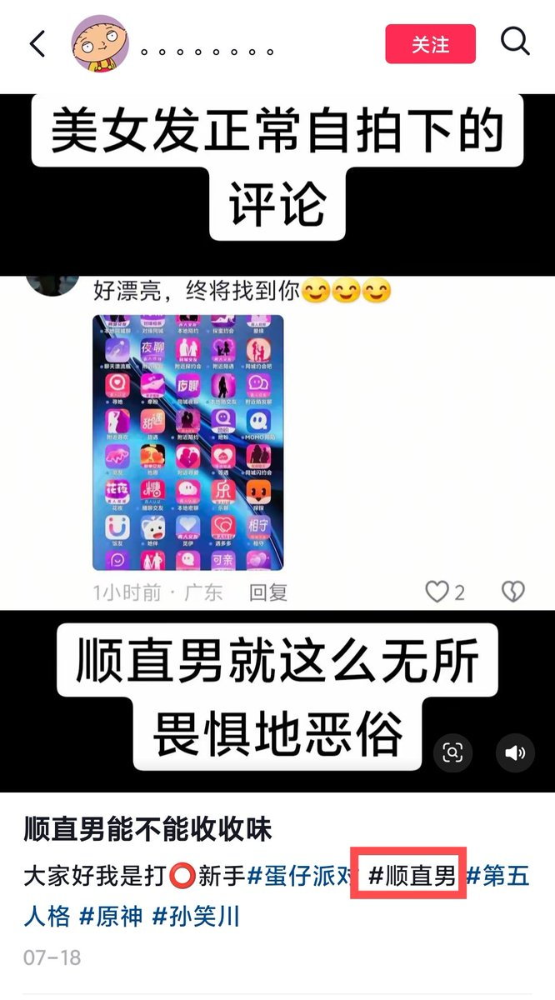
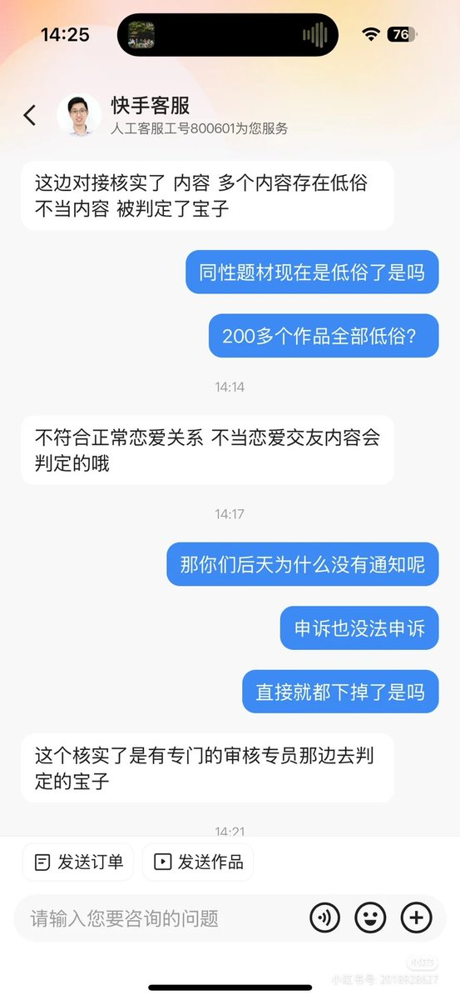

CoFfffEeeeE
@CoFfffEeeeE1
@Alantur57426778 被塔冲了



咸福宫日记
@Alantur57426778
7月上旬以来，陆续收到来自B站、快手、小红书、抖音等多平台的报告，
称有关性少数恋爱（CP）的视频遭遇B站与快手锁定，经与审核沟通，疑似涉及“宣扬非主流价值观”。
不至于此，以“顺直”、“三好同”等词汇反击异性恋霸权及其附庸的活动也遭压制，出头者或遭遇账号封禁，或tag失效。 https://t.co/BLKgdEYK3b